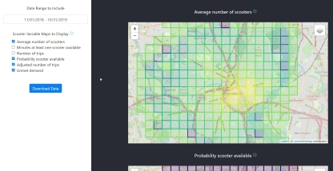
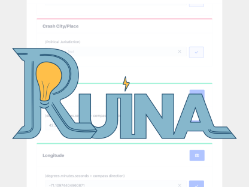
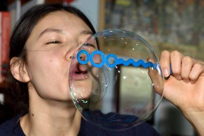

Shared Mobility Visual Analytics Tool
I created a visual analytics tool that can help city planners
manage their shared mobility services. The tool is a React web
application that analyzes scooter-share event data, estimates
spatial demand, and generates an interactive data visualization
page where users can map out usage and demand.

Ruina Crash Reporting App
For my senior capstone project at Olin, I worked with four other students
to create a mobile application, Ruina, that improves and standardizes the
car crash reporting system. Ruina follows the Department of Transportation’s
data collection guidelines, supports versatile data export formats, and includes
features such as GPS mapping and barcode scanning to auto populate fields and
speed up the experience.

Break Through
As part of my AHS (Art, Humanities, and Social Sciences) Capstone, I wrote
a creative writing booklet centered around the theme of breaking through the
shields we put up and the bubbles enclosing us. The stories range from creative
nonfiction to magical realism. Each piece is matched with a writing prompt and
some related recipes.